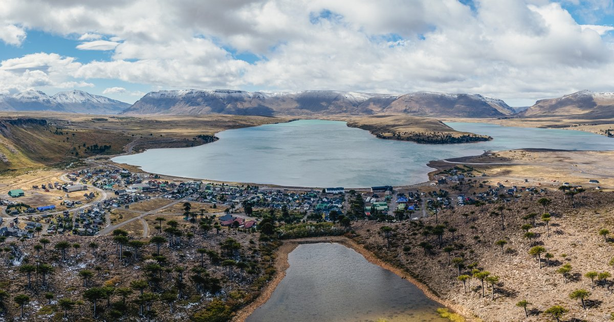
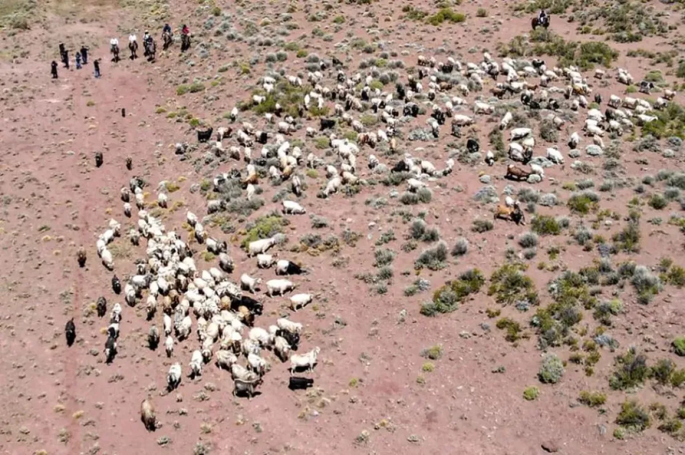
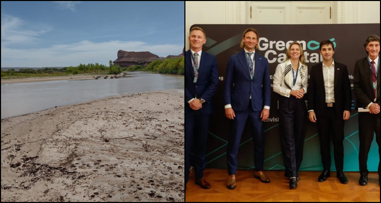
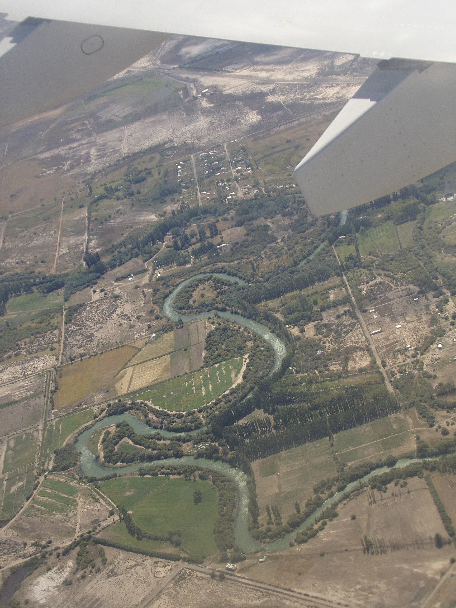

Foto: DatacenterDynamicsMegacentros de datos para IA en la Patagonia
Incentivos a la inversión en un contexto de crisis hídrica
Integrantes: [completar] · Comisión: [completar]
UNSAM · Escuela de Ciencia y Tecnología · 2.º cuatrimestre 2026
Una industria que consume agua y energía, promovida en una región en emergencia hídrica
y hasta USD 25.000 millones: la carta de intención de Stargate Argentina (OpenAI y Sur Energy)
de estabilidad fiscal que ofrece el Súper RIGI a inversiones de más de USD 1.000 millones
cayó el caudal del río Chubut en la estación Los Altares, antes de la emergencia de 2026
Dos megaproyectos anunciados, ninguno en construcción
Stargate Argentina
OpenAI y Sur Energy. Carta de intención para "explorar" un centro de hasta 500 MW cerca del río Limay.
Atlas GigaHub
Green Capital (Polonia), en la Zona Franca de Trelew. 300 MW en 2029 y unos 3.000 MW en 2033.
suman hoy los 13 centros de datos que tiene Argentina.
El Súper RIGI: qué pide y qué da
- Inversión mínima de USD 1.000 millones por proyecto; apunta a los centros de datos de IA.
- Ganancias al 15 % (la alícuota general es 35 %).
- Exención total de derechos de importación.
- Beneficios garantizados por 30 años.
- Las provincias que adhieran no pueden cobrar más de 0,5 % de Ingresos Brutos.
Media sanción en Diputados (24/6/2026, 130 a 106). Trabado en el Senado.
Mientras tanto, falta agua


Lo que nadie informó: cuánta agua y de dónde
"Las cifras precisas de consumo para cada etapa y las fuentes específicas de abastecimiento todavía están siendo definidas."Green Capital, sobre el Atlas GigaHub (EQSnotas, 2026)
"De momento, no hay normativas específicas."Secretaría de Ambiente y Recursos Naturales de Neuquén (La Nación, 2026)
¿Quién define, y con qué conocimiento, si es aceptable promover esta industria en una región en emergencia hídrica?
Hipótesis. No es un asunto técnico que puedan resolver los especialistas por su cuenta. Es una controversia sociotécnica: se disputan a la vez datos, valores y un modelo de desarrollo.
Los cuatro elementos de una controversia sociotécnica, en el caso
Gobiernos y empresas frente a comunidades mapuche, organizaciones e investigadoras. En el medio, senadores y cámaras que apoyan con condiciones.
La empresa promete "más del 90 %" de ahorro de agua sin dar volúmenes. Las estimaciones externas hablan de millones de litros diarios.
Frontera porosa: ¿el agua es un problema de ingeniería o de prioridades? ¿El empleo son "50 o 60 personas" o 500 a 700?
Perder la inversión, no tener seguridad jurídica, dejar afuera a la industria local o quedarse sin agua y sin territorio.
A favorPostura pragmática
- Actores
- Gobierno nacional, gobiernos de Neuquén y Chubut, Sur Energy, Green Capital, voces del sector tecnológico.
- Argumento
- Con la tecnología adecuada el impacto es bajo. "El esquema atraerá industrias que hoy no existen en el país" (Caputo).
- Evidencia
- No hay daño demostrado; los consumos se definirán en los estudios de impacto ambiental.
- Conocimiento
- Técnico y empresarial: datos de las propias empresas y de consultoras.
- Tiempo del riesgo
- Corto plazo, proyecto por proyecto.
- Modelo de desarrollo
- Inserción global con grandes inversiones, apoyada en energía, clima y territorio.
- Discurso
- Economía del conocimiento y seguridad jurídica: "la tecnología avanza mucho más rápido que la regulación" (Etcheverry).
En contraPostura precautoria
- Actores
- Comunidades mapuche, FARN, Fundación Vía Libre, Observatorio Petrolero Sur, investigadoras del CONICET, legisladores opositores.
- Argumento
- En emergencia hídrica y sin información, no se avanza. "El agua podría ser considerada un simple insumo por los inversores" (FARN).
- Evidencia
- Caída medida de los caudales, emergencias declaradas, antecedentes de Uruguay y Chile.
- Conocimiento
- Plural: ciencia independiente, organizaciones y saber territorial. "Ya no nos queda territorio" (lonko Liliana Romero).
- Tiempo del riesgo
- Largo plazo y acumulativo: 30 años, cambio climático, suma con riego y fracking.
- Modelo de desarrollo
- Decisión local sobre bienes comunes; el régimen "se entrega sin contrapartidas productivas".
- Discurso
- Bien común, "terricidio", principio precautorio y consulta previa (Convenio 169 de la OIT).
No son bloques: también hay un "sí, pero con condiciones"
Bloques aliados
Aceptan el régimen si exige generación eléctrica propia y un piso de proveedores nacionales.
Diego Fraga (U. Austral)
Cumplir la normativa ambiental vigente, sin usarla como excusa para bloquear inversiones.
Brasil: régimen Redata
Beneficios fiscales a cambio de energía 100 % renovable, eficiencia hídrica e inversión en I+D.
La pragmática usa la incertidumbre para postergar ("se verá en el estudio"). La precautoria la usa para exigir que se actúe antes.
Riesgos que dependen del conocimiento de otros
- Los afectados pierden su soberanía cognitiva: un vecino no puede medir cuánta agua usará el proyecto.
- El dato solo lo puede producir quien tiene interés en que se apruebe.
- Rechazo causal: mientras el riesgo no esté probado, se actúa como si no existiera.
- Un "90 % de ahorro" sin valor de base funciona como tranquilizante simbólico.

Una objeción que conviene tomar en serio
Evaluamos mal los riesgos por la heurística de disponibilidad. En Chubut la eficiencia de riego es menor al 30 %: quizás el problema del agua está en otro lado. Lo racional es un análisis de costo-beneficio.
Aun con ese criterio, el caso no lo cumple. No se conocen los costos (consumo y fuente de agua) y los beneficios son una carta de intención y cifras de empleo en disputa. Falta información, no racionalidad.
Y como dice Beck, todo enunciado sobre riesgos contiene un "así queremos vivir" que ningún cálculo reemplaza.
La "nube" tiene dirección postal
- Nadie ve "lo global": solo existen visiones locales. Una consulta a una IA se procesa en un edificio que toma agua de una cuenca concreta.
- Mapear la controversia: ¿qué mundo ensambla cada actor y con qué entes propone vivir?
Uruguay: Google preveía 7.600 m³ diarios de agua potable; lo rediseñó con enfriamiento por aire.
Chile: el Tribunal Ambiental ordenó rehacer la evaluación en Cerrillos.
¿Quién define el problema y para quién es la mejora?
- El problema se definió como una carrera por inversiones. El agua quedó como dato secundario: en el Senado no figura entre los cambios discutidos.
Usuarios y empresas de otros países
Los inversores, por 30 años
Provincias sin normas
- Pharmakon: remedio y veneno a la vez. La salida es abrir la caja negra, no rechazar la técnica.

Una controversia abierta
Carta de intención de Stargate. Neuquén declara la emergencia hídrica.
Diputados da media sanción al Súper RIGI.
Se anuncia Atlas GigaHub. Chubut declara la emergencia hídrica.
El Senado no logra dictamen. Si se aprueba con cambios, vuelve a Diputados.
Sin contrato, sin obras, sin datos de agua y sin regulación específica.
"La realidad concreta es que no avanzamos todavía de la carta de intención a un contrato firme."Emiliano Kargieman, fundador de Sur Energy (Letra P, 10/10/2026)
No discuten un número: discuten qué conocimiento vale y qué desarrollo se quiere
Información pública
Consumo y fuentes de agua, antes de otorgar beneficios.
Evaluación por cuenca
Acumulativa y con los otros usos del agua.
Participación
De las comunidades afectadas, con consulta previa.
¿Podrá un Estado que compromete su capacidad fiscal y regulatoria por treinta años corregir el rumbo cuando cambie lo que sabemos sobre las cuencas?
Bibliografía de la materia
Beck, U. (1998). La sociedad del riesgo. Paidós.
Hui, Y. (2023). Anders, Simondon y el devenir de lo poshumano. Pensar Jusbaires.
Kreimer, P. y Zabala, J. P. (2006). ¿Qué conocimiento y para quién? Redes, 12(23).
Latour, B. (2011). Esperando a Gaia. Cuadernos de Otra Parte.
Pedace, K., Schleider, T. y Balmaceda, T. (2023). Inteligencia artificial y sesgos. Revista CTS, 18(53).
Skill, K. y Grinberg, E. (2013). Controversias sociotécnicas en torno a las fumigaciones con glifosato en Argentina. En G. Merlinsky (comp.), Cartografías del conflicto ambiental en Argentina. CICCUS.
Sunstein, C. R. (2006). Riesgo y razón. Katz.
Fuentes sobre el caso
Acero y Roca (2026, 8 de agosto). Guerra de recursos: el megaproyecto de OpenAI por US$ 25.000M.
Cooperativa (2024, 27 de febrero). Tribunal Ambiental frenó proyecto de data center de Google en Cerrillos.
DatacenterDynamics (2025). OpenAI y Sur Energy preparan un proyecto de centro de datos en Argentina.
El Madrynense (2026, julio). Torres promocionó a Chubut como futuro centro de infraestructura digital.
El Observador (2023, 22 de noviembre). Los detalles del proyecto de Google en Uruguay.
EQSnotas (2026, 20 de septiembre). Green Capital reveló cómo será el data center que proyecta en Chubut.
Iglesias, A. (2026, 18 de agosto). Agua para quién: crisis hídrica, RIGI y el mega data center de Trelew. La Izquierda Diario.
Miranda, N. (2026, 28 de junio). Data centers: energía, conectividad y la oportunidad del Super RIGI. Infobae.
Noticias NQN (2026, 10 de agosto). Neuquén extiende la Emergencia Hídrica por otros 180 días.
Ruido (2026, 2 de junio). Mega data centers de IA: qué propone el "Súper RIGI". Chequeado.
Seguel, A. (2026, 21 de septiembre). Defensoras del agua en la Patagonia. Indymedia Argentina.
Sieira, P. (2026, 2 de septiembre). El Súper RIGI vuelve a trabarse en el Senado. iProfesional.
Sternik, I. (2026, 10 de octubre). Stargate cumple un año. Letra P.
Tarricone, M. (2026, 24 de junio). "Súper RIGI": las 3 claves del proyecto. Chequeado.
Tellez Tejada, N. (2026, 30 de junio). El Súper RIGI y el dilema digital. TeleSemana.
Viano, L. y Calmels, J. (2026, 31 de marzo). Mega data centers en la Patagonia. La Nación.
Leyes 25.675 (General del Ambiente) y 24.071 (Convenio 169 de la OIT).
Imágenes
DatacenterDynamics, iProfesional, Noticias NQN, La Izquierda Diario y El Observador (tomadas de las notas citadas). Wikimedia Commons: Gastón Cuello (CC BY-SA 4.0) y BalticServers (CC BY-SA 3.0).